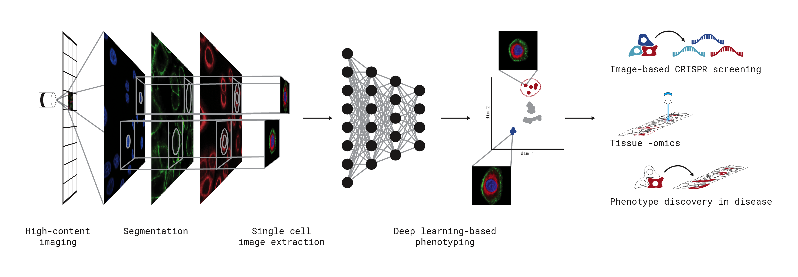

scPortrait - image-based single cell analysis at scale in Python
scPortrait is a scalable toolkit to analyse single-cell image datasets. This Python implementation efficiently segments individual cells, generates single-cell datasets and provides tools for the efficient deep learning classification of their phenotypes for downstream applications.
{kind=link}
Installation
Check out the installation instructions here. You can validate your installation by running one of the example notebooks here.
Getting Started
You can check out our quickstart guide to get started with scPortrait. For more detailed information on the package, we have written an in depth computational workflow guide. In the github repository you can also find some tutorial notebooks as well as small example datasets to get started with. If you encounter issues feel free to open up a git issue.
Citing our Work
scPortrait was developed by Sophia Mädler and Niklas Schmacke in the labs of Matthias Mann, Veit Hornung and Fabian Theis in 2024 and is actively being developed. If you are interested in contributing please reach out to the developers.
If you use our code please cite the following manuscript:
SPARCS, a platform for genome-scale CRISPR screening for spatial cellular phenotypes Niklas Arndt Schmacke, Sophia Clara Maedler, Georg Wallmann, Andreas Metousis, Marleen Berouti, Hartmann Harz, Heinrich Leonhardt, Matthias Mann, Veit Hornung bioRxiv 2023.06.01.542416; doi: https://doi.org/10.1101/2023.06.01.542416
Contributing
We are excited for people to adapt and extend scPortrait to their needs. If you are interested in contributing to scPortrait, please reach out to the developers or open a pull request on our github repository.
Documentation
scPortrait Ecosystem
scPortrait tools
Module API